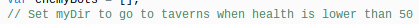
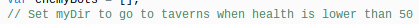

This is my vindinium Website. Here I will be explaining what vindinium is. Vindinium is an intelligence programming challenge game in which you have control of your bot and you have to battle other AI bots. Each bot has a specific amount of turns and the bot with the most gold by the end of the game wins. The bots are trying to control the gold mines and when a bot's health gets low, that bot goes to buy cream soda from a tavern and the process repeats over and over agian. Bots might also crash in the game. There is also a leaderboard which shows which players are on the top of the game.
A tavern is basically a place where a bot will go if their health is low. A bot can buy cream soda from a tavern for gold. The cream soda will restore a bot's health. The bot will automatically go to the tavern because if another bot has higher health then the bot will definetly not fight that bot.
 
I set up my code so that when my bot has lower than 50 health it
will go to the a tavern to restore its health. I decided to do this so that
my bot would'nt die and so that my bot wins the game.

I set up my code so that when my bot has lower than 50 health it
will go to the a tavern to restore its health. I decided to do this so that
my bot would'nt die and so that my bot wins the game.

The mines are the gold in the carts. Each bot is trying to collect as much goldmines as they can. They are also trying to take other players goldmines while defending theirs. The objective is to end up with the most gold by the end of the game.

This is my code for my bot to go to the goldmines. I put it so that my bot would go to the goldmines when his health is higher than 50. I decided to do this so that my bot would'nt die because if my bot goes to a goldmine when he has lower than 50 health he might die if another bot is there with higher health.
 An AI bot is basically a bot that is controlled by you. AI mean
artificial inteligence. A bot's main objective is to get gold
from the gold mines while being attacked by other bots. Your bot
can also attack other bots. when your bot's health is too low
your bot will go to a tavern to buy cream soda for gold so that
it can regain health and continue to get gold. The bot with the
most gold collected by the end of the game wins the game. You
can also make your bot better by adding comments. Comments basically
tell your bot what to do. For example, you can put set mydir to go
to taverns when health is lower than 50. That will make it so that
your bot will go to a tavern when its health is lower than 50 so
that it won't die from another bot. I decided to do this so that
my bot would'nt die if there was another bot nearby ready to kill
my bot, because if I get more health then I would have a better
chance to survive and kill the other bot in a battle
An AI bot is basically a bot that is controlled by you. AI mean
artificial inteligence. A bot's main objective is to get gold
from the gold mines while being attacked by other bots. Your bot
can also attack other bots. when your bot's health is too low
your bot will go to a tavern to buy cream soda for gold so that
it can regain health and continue to get gold. The bot with the
most gold collected by the end of the game wins the game. You
can also make your bot better by adding comments. Comments basically
tell your bot what to do. For example, you can put set mydir to go
to taverns when health is lower than 50. That will make it so that
your bot will go to a tavern when its health is lower than 50 so
that it won't die from another bot. I decided to do this so that
my bot would'nt die if there was another bot nearby ready to kill
my bot, because if I get more health then I would have a better
chance to survive and kill the other bot in a battle

This has been an interesting process of computer science. There has been some ups and some downs but I think overall I have learned a lot in this class about computer science. I learned a lot about this game. Vindinium is a good game that shows how well you made your bot by adding a good amount of comments. I learned how to make a bot and make it attack other players and make it get goldmines in order for me to win. I remembered the first time my bot played in a game it won and I felt good when it won. Then the next game it got destroyed by Mauri's bot lol. Mauri's bot got like 1,500 and something score and mine only got like 150. That was when I was barely starting to play and I was still learing how to make my bot better. I haven't battled since, but I think my bot will put up a good match with the other bots. I also learned how to add comments to make my bot better in the game.
var Bot = require('bot');
var PF = require('pathfinding');
//var bot = new Bot('', 'training', 'http://vindinium.org'); //Put your bot's code here and change training to Arena when you want to fight others.
var bot = new Bot('evwhm81w', 'arena', 'http://v.summitdevclub.com:9000'); //Put your bot's code here and change training to Arena when you want to fight others.
var goDir;
var Promise = require('bluebird');
Bot.prototype.botBrain = function() {
return new Promise(function(resolve, reject) {
_this = bot;
//////* Write your bot below Here *//////
//////* Set `myDir` in the direction you want to go and then bot.goDir is set to myDir at the bottom *////////
/* *
* This Code is global data! *
* */
// Set myDir to what you want and it will set bot.goDir to that direction at the end. Unless it is "none"
var myDir;
//
var myPos = [bot.yourBot.pos.x, bot.yourBot.pos.y];
// Set myDir to go to goldmines when health is higher than 50
var enemyBots = [];
// Set myDir to go to taverns when health is lower than 50
if(bot.yourBot.id != 1) enemyBots.push(bot.bot1);
if(bot.yourBot.id != 2) enemyBots.push(bot.bot2);
if(bot.yourBot.id != 3) enemyBots.push(bot.bot3);
if(bot.yourBot.id != 4) enemyBots.push(bot.bot4);
/* *
* This Code Decides WHAT to do *
* */
var task = "none"
//
if(bot.yourBot.life < 20){
task = "go to tavern"
}
else if(bot.yourBot.life > 20){
task = "go to gold mines"
}
else{
task = "fight bots"
}
/* *
* This Code Determines HOW to do it *
* */
// If the task is 'freeMines', finds the closest mine and sets myDir to the next path to get there
if(task === "go to tavern"){
var closestTavern = bot.taverns[0]
for(var i = 0; i < bot.taverns; i++){
if(bot.findDistance(myPos, closestTavern) > bot.findDistance(myPos, bot.taverns[i])){
closestTavern = bot.taverns[i];
}
}
myDir = bot.findPath(myPos, closestTavern);
}
// This task makes my bot go to gold mines that are free from other players.
if(task === "go to Free Gold mines"){
var closestfreeMines = bot.freeMines[0]
for(var i = 0; i < bot.freeMines; i++){
if(bot.findDistance(myPos, closestfreeMines) > bot.findDistance(myPos, bot.freeMines[i])){
closestfreeMines = bot.freeMines[i];
}
}
myDir = bot.findPath(myPos, closestfreeMines);
}
// This task makes my bot fight enemy bots.
if(task === "go to Enemy Bots"){
var closestenemyBots = enemyBots[0]
for(var i = 0; i < enemyBots; i++){
if(bot.findDistance(myPos, closestenemyBots.posArray) > bot.findDistance(myPos, enemyBots[i].posArray)){
closestenemyBots = enemyBots[i];
}
}
myDir = bot.findPath(myPos, closestenemyBots.posArray);
}
/* *
* This Code Sets your direction based on myDir. Change if you want. */
if(task === "none") {
console.log("Going Random!");
var rand = Math.floor(Math.random() * 4);
var dirs = ["north", "south", "east", "west"];
myDir = dirs[rand];
}
bot.goDir = myDir;
///////////* DON'T REMOVE ANTYTHING BELOW THIS LINE *//////////////
resolve();
});
}
bot.runGame();